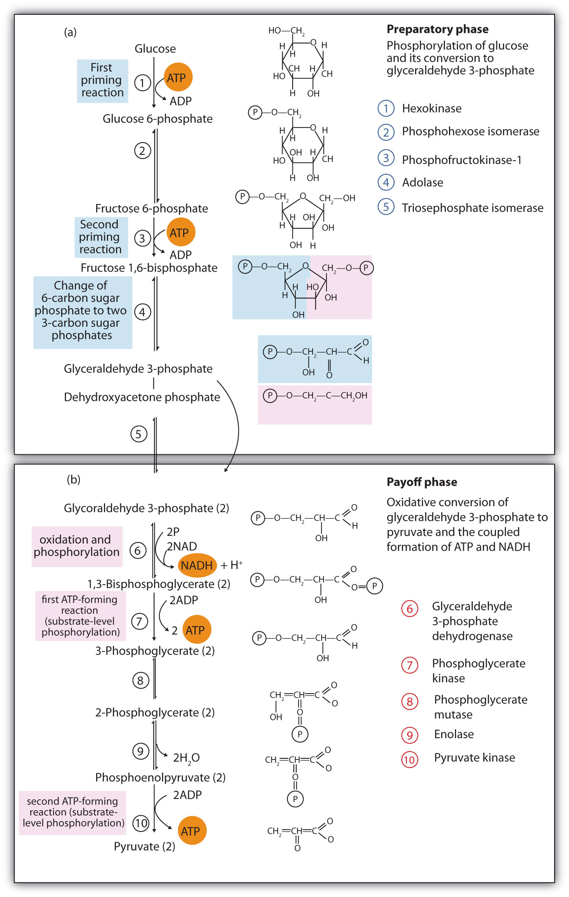

In stage II of catabolism, the metabolic pathway known as glycolysisThe metabolic pathway in which glucose is broken down to two molecules of pyruvate with the corresponding production of ATP. converts glucose into two molecules of pyruvate (a three-carbon compound with three carbon atoms) with the corresponding production of adenosine triphosphate (ATP). The individual reactions in glycolysis were determined during the first part of the 20th century. It was the first metabolic pathway to be elucidated, in part because the participating enzymes are found in soluble form in the cell and are readily isolated and purified. The pathway is structured so that the product of one enzyme-catalyzed reaction becomes the substrate of the next. The transfer of intermediates from one enzyme to the next occurs by diffusion.
The 10 reactions of glycolysis, summarized in Figure 20.16 "Glycolysis", can be divided into two phases. In the first 5 reactions—phase I—glucose is broken down into two molecules of glyceraldehyde 3-phosphate. In the last five reactions—phase II—each glyceraldehyde 3-phosphate is converted into pyruvate, and ATP is generated. Notice that all the intermediates in glycolysis are phosphorylated and contain either six or three carbon atoms.
Figure 20.16 Glycolysis
When glucose enters a cell, it is immediately phosphorylated to form glucose 6-phosphate, in the first reaction of phase I. The phosphate donor in this reaction is ATP, and the enzyme—which requires magnesium ions for its activity—is hexokinase. In this reaction, ATP is being used rather than being synthesized. The presence of such a reaction in a catabolic pathway that is supposed to generate energy may surprise you. However, in addition to activating the glucose molecule, this initial reaction is essentially irreversible, an added benefit that keeps the overall process moving in the right direction. Furthermore, the addition of the negatively charged phosphate group prevents the intermediates formed in glycolysis from diffusing through the cell membrane, as neutral molecules such as glucose can do.
In the next reaction, phosphoglucose isomerase catalyzes the isomerization of glucose 6-phosphate to fructose 6-phosphate. This reaction is important because it creates a primary alcohol, which can be readily phosphorylated.
The subsequent phosphorylation of fructose 6-phosphate to form fructose 1,6-bisphosphate is catalyzed by phosphofructokinase, which requires magnesium ions for activity. ATP is again the phosphate donor.
When a molecule contains two phosphate groups on different carbon atoms, the convention is to use the prefix bis. When the two phosphate groups are bonded to each other on the same carbon atom (for example, adenosine diphosphate [ADP]), the prefix is di.
Fructose 1,6-bisphosphate is enzymatically cleaved by aldolase to form two triose phosphates: dihydroxyacetone phosphate and glyceraldehyde 3-phosphate.
Isomerization of dihydroxyacetone phosphate into a second molecule of glyceraldehyde 3-phosphate is the final step in phase I. The enzyme catalyzing this reaction is triose phosphate isomerase.
Comment: In steps 4 and 5, aldolase and triose phosphate isomerase effectively convert one molecule of fructose 1,6-bisphosphate into two molecules of glyceraldehyde 3-phosphate. Thus, phase I of glycolysis requires energy in the form of two molecules of ATP and releases none of the energy stored in glucose.
In the initial step of phase II, glyceraldehyde 3-phosphate is both oxidized and phosphorylated in a reaction catalyzed by glyceraldehyde-3-phosphate dehydrogenase, an enzyme that requires nicotinamide adenine dinucleotide (NAD+) as the oxidizing agent and inorganic phosphate as the phosphate donor. In the reaction, NAD+ is reduced to reduced nicotinamide adenine dinucleotide (NADH), and 1,3-bisphosphoglycerate (BPG) is formed.
BPG has a high-energy phosphate bond (see Table 20.1 "Energy Released by Hydrolysis of Some Phosphate Compounds") joining a phosphate group to C1. This phosphate group is now transferred directly to a molecule of ADP, thus forming ATP and 3-phosphoglycerate. The enzyme that catalyzes the reaction is phosphoglycerate kinase, which, like all other kinases, requires magnesium ions to function. This is the first reaction to produce ATP in the pathway. Because the ATP is formed by a direct transfer of a phosphate group from a metabolite to ADP—that is, from one substrate to another—the process is referred to as substrate-level phosphorylationThe synthesis of ATP by the direct transfer of a phosphate group from a metabolite to ADP., to distinguish it from the oxidative phosphorylation discussed in Section 20.4 "Stage III of Catabolism".
In the next reaction, the phosphate group on 3-phosphoglycerate is transferred from the OH group of C3 to the OH group of C2, forming 2-phosphoglycerate in a reaction catalyzed by phosphoglyceromutase.
A dehydration reaction, catalyzed by enolase, forms phosphoenolpyruvate (PEP), another compound possessing a high-energy phosphate group.
The final step is irreversible and is the second reaction in which substrate-level phosphorylation occurs. The phosphate group of PEP is transferred to ADP, with one molecule of ATP being produced per molecule of PEP. The reaction is catalyzed by pyruvate kinase, which requires both magnesium and potassium ions to be active.
Comment: In phase II, two molecules of glyceraldehyde 3-phosphate are converted to two molecules of pyruvate, along with the production of four molecules of ATP and two molecules of NADH.
Most of the chapter-opening essays in Chapter 16 "Carbohydrates" through Chapter 20 "Energy Metabolism" have touched on different aspects of diabetes and the role of insulin in its causation and treatment. Although medical science has made significant progress against this disease, it continues to be a major health threat. Some of the serious complications of diabetes are as follows:
Because a person with diabetes is unable to use glucose properly, excessive quantities accumulate in the blood and the urine. Other characteristic symptoms are constant hunger, weight loss, extreme thirst, and frequent urination because the kidneys excrete large amounts of water in an attempt to remove excess sugar from the blood.
There are two types of diabetes. In immune-mediated diabetes, insufficient amounts of insulin are produced. This type of diabetes develops early in life and is also known as Type 1 diabetes, as well as insulin-dependent or juvenile-onset diabetes. Symptoms are rapidly reversed by the administration of insulin, and Type 1 diabetics can lead active lives provided they receive insulin as needed. Because insulin is a protein that is readily digested in the small intestine, it cannot be taken orally and must be injected at least once a day.
In Type 1 diabetes, insulin-producing cells of the pancreas are destroyed by the body’s immune system. Researchers are still trying to find out why. Meanwhile, they have developed a simple blood test capable of predicting who will develop Type 1 diabetes several years before the disease becomes apparent. The blood test reveals the presence of antibodies that destroy the body’s insulin-producing cells.
Type 2 diabetes, also known as noninsulin-dependent or adult-onset diabetes, is by far the more common, representing about 95% of diagnosed diabetic cases. (This translates to about 16 million Americans.) Type 2 diabetics usually produce sufficient amounts of insulin, but either the insulin-producing cells in the pancreas do not release enough of it, or it is not used properly because of defective insulin receptors or a lack of insulin receptors on the target cells. In many of these people, the disease can be controlled with a combination of diet and exercise alone. For some people who are overweight, losing weight is sufficient to bring their blood sugar level into the normal range, after which medication is not required if they exercise regularly and eat wisely.
Those who require medication may use oral antidiabetic drugs that stimulate the islet cells to secrete insulin. First-generation antidiabetic drugs stimulated the release of insulin. Newer second-generation drugs, such as glyburide, do as well, but they also increase the sensitivity of cell receptors to insulin. Some individuals with Type 2 diabetes do not produce enough insulin and thus do not respond to these oral medications; they must use insulin. In both Type 1 and Type 2 diabetes, the blood sugar level must be carefully monitored and adjustments made in diet or medication to keep the level as normal as possible (70–120 mg/dL).
The presence or absence of oxygen determines the fates of the pyruvate and the NADH produced in glycolysis. When plenty of oxygen is available, pyruvate is completely oxidized to carbon dioxide, with the release of much greater amounts of ATP through the combined actions of the citric acid cycle, the electron transport chain, and oxidative phosphorylation. (For more information about oxidative phosphorylation, see Section 20.4 "Stage III of Catabolism".) However, in the absence of oxygen (that is, under anaerobic conditions), the fate of pyruvate is different in different organisms. In vertebrates, pyruvate is converted to lactate, while other organisms, such as yeast, convert pyruvate to ethanol and carbon dioxide. These possible fates of pyruvate are summarized in Figure 20.17 "Metabolic Fates of Pyruvate". The conversion to lactate or ethanol under anaerobic conditions allows for the reoxidation of NADH to NAD+ in the absence of oxygen.
Figure 20.17 Metabolic Fates of Pyruvate

The net energy yield from anaerobic glucose metabolism can readily be calculated in moles of ATP. In the initial phosphorylation of glucose (step 1), 1 mol of ATP is expended, along with another in the phosphorylation of fructose 6-phosphate (step 3). In step 7, 2 mol of BPG (recall that 2 mol of 1,3-BPG are formed for each mole of glucose) are converted to 2 mol of 3-phosphoglycerate, and 2 mol of ATP are produced. In step 10, 2 mol of pyruvate and 2 mol of ATP are formed per mole of glucose.
For every mole of glucose degraded, 2 mol of ATP are initially consumed and 4 mol of ATP are ultimately produced. The net production of ATP is thus 2 mol for each mole of glucose converted to lactate or ethanol. If 7.4 kcal of energy is conserved per mole of ATP produced, and the total amount of energy that can theoretically be obtained from the complete oxidation of 1 mol of glucose is 670 kcal (as stated in the chapter introduction), the energy conserved in the anaerobic catabolism of glucose to two molecules of lactate (or ethanol) is as follows:
Thus anaerobic cells extract only a very small fraction of the total energy of the glucose molecule.
Contrast this result with the amount of energy obtained when glucose is completely oxidized to carbon dioxide and water through glycolysis, the citric acid cycle, the electron transport chain, and oxidative phosphorylation as summarized in Table 20.3 "Maximum Yield of ATP from the Complete Oxidation of 1 Mol of Glucose". Note the indication in the table that a variable amount of ATP is synthesized, depending on the tissue, from the NADH formed in the cytoplasm during glycolysis. This is because NADH is not transported into the inner mitochondrial membrane where the enzymes for the electron transport chain are located. Instead, brain and muscle cells use a transport mechanism that passes electrons from the cytoplasmic NADH through the membrane to flavin adenine dinucleotide (FAD) molecules inside the mitochondria, forming reduced flavin adenine dinucleotide (FADH2), which then feeds the electrons into the electron transport chain. This route lowers the yield of ATP to 1.5–2 molecules of ATP, rather than the usual 2.5–3 molecules. A more efficient transport system is found in liver, heart, and kidney cells where the formation of one cytoplasmic NADH molecule results in the formation of one mitochondrial NADH molecule, which leads to the formation of 2.5–3 molecules of ATP.
Table 20.3 Maximum Yield of ATP from the Complete Oxidation of 1 Mol of Glucose
| Reaction | Comments | Yield of ATP (moles) |
|---|---|---|
| glucose → glucose 6-phosphate | consumes 1 mol ATP | −1 |
| fructose 6-phosphate → fructose 1,6-bisphosphate | consumes 1 mol ATP | −1 |
| glyceraldehyde 3-phosphate → BPG | produces 2 mol of cytoplasmic NADH | |
| BPG → 3-phosphoglycerate | produces 2 mol ATP | +2 |
| phosphoenolpyruvate → pyruvate | produces 2 mol ATP | +2 |
| pyruvate → acetyl-CoA + CO2 | produces 2 mol NADH | |
| isocitrate → α-ketoglutarate + CO2 | produces 2 mol NADH | |
| α-ketoglutarate → succinyl-CoA + CO2 | produces 2 mol NADH | |
| succinyl-CoA → succinate | produces 2 mol GTP | +2 |
| succinate → fumarate | produces 2 mol FADH2 | |
| malate → oxaloacetate | produces 2 mol NADH | |
| 2 cytoplasmic NADH from glycolysis | yields 2–3 mol ATP per NADH (depending on tissue) | +4 to +6 |
| 2 NADH from the oxidation of pyruvate | yields 3 mol ATP per NADH | +6 |
| 2 FADH2 from the citric acid cycle | yields 2 ATP per FADH2 | +4 |
| 3 NADH from the citric acid cycle | yields 3 ATP per NADH | +18 |
| Net yield of ATP: | +36 to +38 | |
The total amount of energy conserved in the aerobic catabolism of glucose in the liver is as follows:
Conservation of 42% of the total energy released compares favorably with the efficiency of any machine. In comparison, automobiles are only about 20%–25% efficient in using the energy released by the combustion of gasoline.
As indicated earlier, the 58% of released energy that is not conserved enters the surroundings (that is, the cell) as heat that helps to maintain body temperature. If we are exercising strenuously and our metabolism speeds up to provide the energy needed for muscle contraction, more heat is produced. We begin to perspire to dissipate some of that heat. As the perspiration evaporates, the excess heat is carried away from the body by the departing water vapor.
In glycolysis, how many molecules of pyruvate are produced from one molecule of glucose?
In vertebrates, what happens to pyruvate when
In anaerobic glycolysis, how many molecules of ATP are produced from one molecule of glucose?
two
There is a net production of two molecules of ATP.
Replace each question mark with the correct compound.
Replace each question mark with the correct compound.
From the reactions in Exercises 1 and 2, select the equation(s) by number and letter in which each type of reaction occurs.
From the reactions in Exercises 1 and 2, select the equation(s) by number and letter in which each type of reaction occurs.
What coenzyme is needed as an oxidizing agent in glycolysis?
Calculate
How is the NADH produced in glycolysis reoxidized when oxygen supplies are limited in
Of the total calculated in Exercise 9a, determine the number of moles of ATP produced in each process.
NAD+